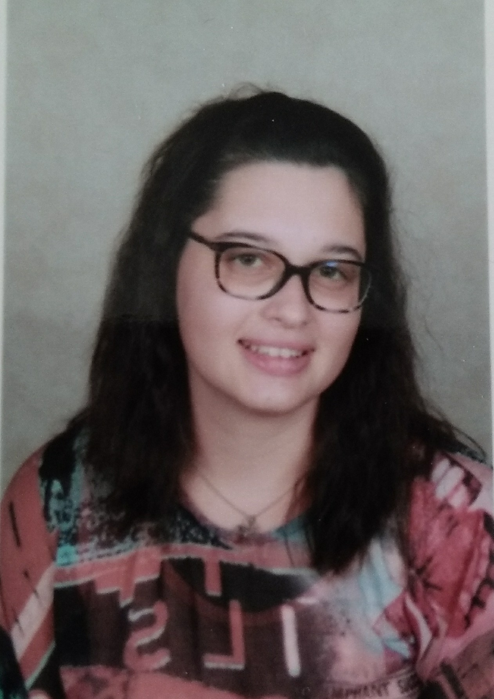

7-Aperçu d'un CV
Informaticienne

État civil--------------------------------------------------------------------------------------------------------------------------------------------------------------------------------------------------------------------------------------------------------------
Nom: AUBINEAU--Denis
Prénom: Anaïs
Téléphone: 08.00.00.00.00
Adresse e-mail: nath.nac3@gmail.com
Adresse: 124,rue de la Barre
Parcours de formations-----------------------------------------------------------------------------------------------------------------------------------------------------------------------------------------------------------------------------------------
Scolaire:
- Collège François-Rabelais:
(2018) DNB avec mention "bien"
(2016) ASSR1
(2018) ASSR2
- Lycée Henry Bergson
- Certificat individuel de praticipation à la journée défense et citoyenneté,"Attestation de recensement"
- Certificat de formation initiation aux premiers secours
Stage:
-L'"ISTIA" avec un enseignant en informatique sur la création de jeux vidéo.
Cordées de la réussite:
- Acteur et spectateur sur l'atelier-> pratique sur la vie de la carrière d'école des arts du cirque.
- "ISTIA"-> fabriction numérique et non numérique en vue de valoriser un travail de conception, d'innovation, prototypage et bricolage d'une machine de nouvelle technologie.
- Atelier de confiance en soi et créative -> pratiques narratives, connaissance et confiance en soi, coaching d'orientation, récit de vie anticipé et créativité.
M'essayer c'est m'adopter:
- Pratique sur la "Chimie Organique" à l'Université d'Angers
- Pratique sur les "Mécaniques d'évolution et paléoécologie" à l'Université d'Angers
- Cour de robotique au "Polytech Angers".
Réunions d'informations:
- "Police scientifique"
- Orientation "prépa"
Langues et connaissances en logiciels-------------------------------------------------------------------------------------------------------------------------------------------------------------------------------------------------------------------
Connaissance en langues:
- Français (acquis)
-Anglais
-Espagnol
-Chinois
-Latin
- L-S-F (Langue des Signes Français)
Parcours en logistique et compétences maîtriser:
- Cour "NSI"(Numérique et Science de l'Informatique)
-NotePad++
-LibreOffice : Writer, Impress, Calc
-Word
-Exel
-Python
Informations complémentaires-------------------------------------------------------------------------------------------------------------------------------------------------------------------------------------------------------------------------------
Activités sportives prariquées depuis plusieurs années ou récente:
- Équitation ( 2 ans )
- Karaté (10 ans ) : médailles d’argent à plusieurs reprises lors de compétitions de combats et sélectionner au « championnat de France » à Paris.
- Body Karaté ( 2 ans)
- Danse moderne jazz et classique ( 1 ans )
- Danse contemporaine ( 2 ans )
Hobbies:
- Travail manuel ( bricolage, canevas, faire des tapis, coutures, ... )
- Lire
- Balades
- Écouter de la musique
-Fait parfois du bénévolat dans les associations, collège et lycée
<--retour au menu